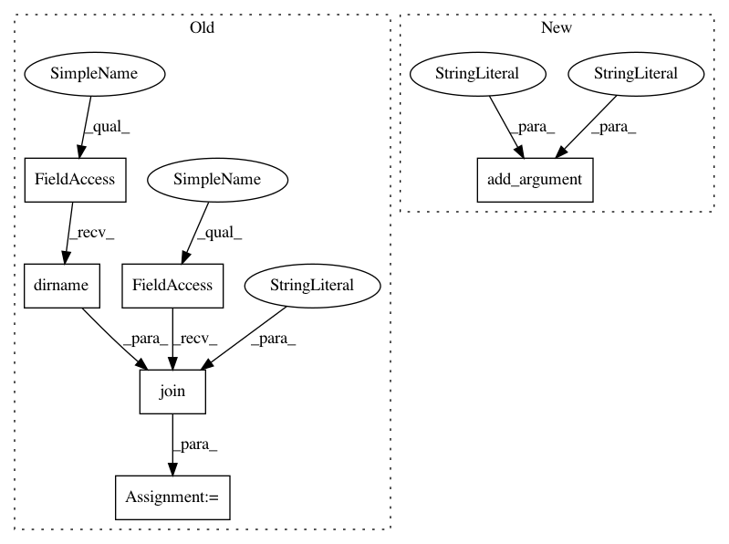

ddfac3e42d2ae2e09751de6638d813c76e30ff94,tools/check_sdist.py,,,#,8
Before Change
import subprocess
import sys
base_dir = os.path.join(os.path.dirname(__file__), "..")
os.chdir(base_dir)
p = subprocess.Popen("python setup.py sdist".split(),
stdout=subprocess.PIPE)
After Change
import tarfile
parser = ArgumentParser(description="Check a created sdist")
parser.add_argument("sdist_name", type=str, nargs=1,
help="The name of the sdist file to check")
args = parser.parse_args()
sdist_name = args.sdist_name[0]
with tarfile.open(sdist_name) as tar:
In pattern: SUPERPATTERN
Frequency: 3
Non-data size: 6
Instances
Project Name: scikit-image/scikit-image
Commit Name: ddfac3e42d2ae2e09751de6638d813c76e30ff94
Time: 2018-12-04
Author: mark.harfouche@gmail.com
File Name: tools/check_sdist.py
Class Name:
Method Name:
Project Name: BerkeleyAutomation/gqcnn
Commit Name: 076e79ce49973843e62f350c9335448b977d224f
Time: 2018-11-16
Author: jmahler@berkeley.edu
File Name: examples/policy_ros.py
Class Name:
Method Name:
Project Name: dpressel/mead-baseline
Commit Name: 5d0464c39d231213fa1bf61aae5cf92889dc7850
Time: 2020-07-12
Author: dpressel@gmail.com
File Name: api-examples/generate_mlm.py
Class Name:
Method Name: run
Project Name: scikit-image/scikit-image
Commit Name: ddfac3e42d2ae2e09751de6638d813c76e30ff94
Time: 2018-12-04
Author: mark.harfouche@gmail.com
File Name: tools/check_sdist.py
Class Name:
Method Name: